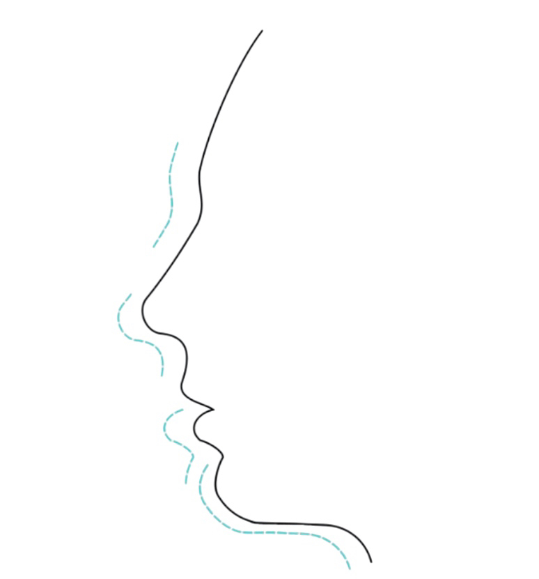
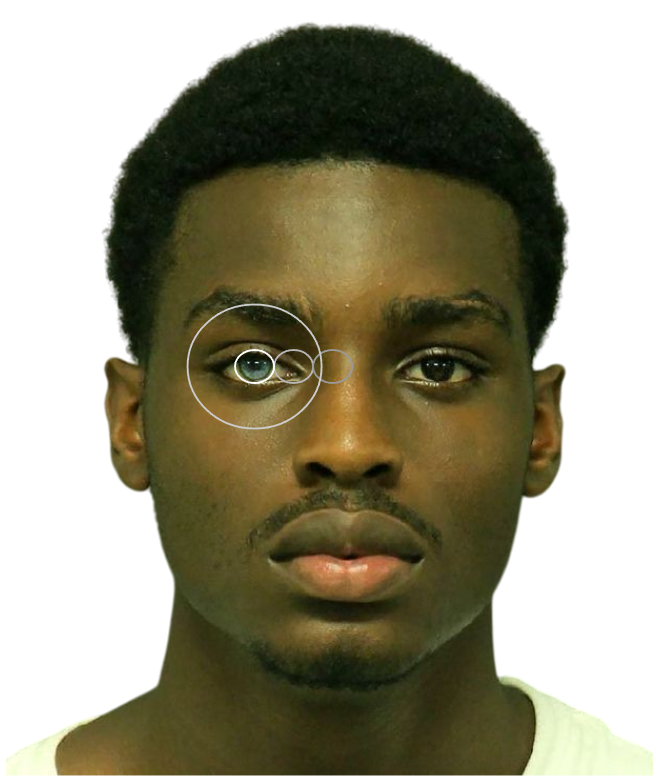
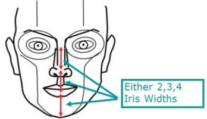

Facial Harmony
Encountering someone attractive sparks an ineffable sense of awe. Yet, it is difficult to explain in words the charm of their attention-capturing faces. What makes their face so captivating? Most likely, it is their profound facial harmony—the relative positions and relative proportions of facial features which result in a pleasing facial profile.

Each element of your face should be proportionate to the others for an overall harmonious look. This doesn’t mean every feature must be average or standard-sized; rather, they should fit together well on your unique face. Facial harmony is a cross-cultural and universal indicator of beauty.
Basic Proportions
The face can be divided vertically into 3 equal sections as follows:

The concept of equal facial thirds is rooted in classical ideals of beauty, such as the Golden Ratio,
which has been historically associated with aesthetically pleasing proportions. Faces closer to these proportional ideals are often rated as more attractive.
Such balance within the face signals good health and fertility, reflecting an underlying biological basis for the universal appeal of proportional faces.
Similarly, the attractive, proportional face can be divided horizontally into equal fifths.
Each fifth should be roughly equal to the width of one eye.

Facial proportionality is associated with genetic fitness and health. Although different cultures may have variations in beauty ideals, the preference for facial harmony is nearly universal.
Side Profile
Beauty isn’t just about how features look from the front.
A well-balanced side profile contributes to a cohesive and pleasing silhouette.
The side profile is interlinked to the growth of facial features—a balanced nose and harmonious facial angles imply developmental stability while a well-defined jawline indicates proper craniofacial growth. It reflects the underlying bone structure of the face. Hence, an aesthetic profile is a result of optimal facial development.
An attractive, harmonious profile flow may be visualized as a series of waves or “Ss”. Irregularities or acute curves, though more often tolerated in males, tend to disrupt balance. A nasal hump or very angular lips, for example, concentrate an observer’s attention, drawing attention away from the rest of the face.
Circles of Prominence
We perceive attractiveness holistically—our brains assess the face as a whole, rather than individual features. The circles of prominence serve as an aesthetic guideline for how features interact and create balance.
Circles of Prominence (COP)
When you ask a group of people if they were to put a circle within the box in the most pleasing way, most will choose that circle to be in the center of the box. This subconsciously satisfies our desire for things to be in order as order creates beauty.

One notion is that each object, shape, or distance must have an ideal within the face to be beautiful. An observer mostly focuses on the iris of a face, thus, the size of the iris must determine every shape and distance between zero and infinity in a proportionate way.

Based on trackings of people's eye movements when observing faces, people spend the most time on the iris, lower lip and nasal tip. Hence, they form the three most prominent circles. These three are essential facial landmarks for beauty and their relative positions determine harmony.
We assess facial beauty as a whole through facial landmarks, mainly the eyes, nasal tip and lower lip. These landmarks can be thought of as circles, and the orderly arrangement of these circles creates facial beauty. The ideal distances between these circles for facial beauty are assessed in terms of iris width. In general, so long as the positions of these features align with that of a prototypical face, a face will typically be considered harmonious.

Central Prominence (Most Important):
The eyes, eyebrows, and nose form the central focus of facial attractiveness.
People notice this area first, and it has the greatest impact on perceived beauty.

Midface Prominence (Second Most Important):
The nose, along with surrounding features (e.g. cheekbones) adds dimension and contributes to the overall harmony of the face.
Outer Prominence (Third Most Important):
The lower lip and surrounding features (e.g. jawline, chin) form the outer frame of the face.
Within the eyes, nose, and mouth, the iris, nasal tip, and the center portion of the lower lip are the most important elements. They serve as centerpieces for each anatomical region and their relationship determines order and facial beauty.

We focus on the iris most, so the more deviant the key facial features are from 1 iris width proportion, the less association they have with other structures. Hence, the face becomes less harmonious.

The relative positions are a function of iris width.
From an evolutionary perspective, facial proportionality is associated with genetic fitness and health. Although different cultures may have variations in beauty ideals, studies show that the preference for facial harmony is nearly universal.
Face Shape
All attractive faces have a proportionate face shape that is neither too tall, short or wide.
There are attractive people from all types of face shapes (oval, round, heart-shaped, etc.), but the essential metric for beauty would be the facial height relative to its width.
Learn more under Facial Structure

In general, an attractive face should be ~1.35x taller than it is wide for males, and ~1.3x for females. Although some attractive faces do not necessarily conform to these specific numbers, restoring proportion through attaining a leaner face for instance, tends to increase attractiveness.
Facial Landmarks
How do AI models (e.g. Midjourney) generate attractive, harmonious faces?
As you may have guessed, facial landmarks.
AI-generated attractive face
In alignment with the Circles of Prominence theory, AI maps key points on a face (like eyes, nose, and mouth) to ensure proper alignment and proportions, which are critical for attractiveness. These landmarks help analyze the ratios and symmetry of the face, and the relative positions of these facial features for facial harmony.
Myths
Myth 1: Perfect Symmetry Equals Perfect Harmony.
Reality: While symmetry contributes to harmony, minor asymmetries are natural and can add character. Harmony is about balance, not perfection.
Myth 2: Facial Harmony Is Only About Proportions.
Reality: Harmony also involves the flow and contour of the face, not just mathematical ratios.
Myth 3: Only Certain Face Shapes Can Achieve Harmony.
Reality: Every face shape can achieve harmony by enhancing its unique features.
Summary
While cultural and personal preferences play a role in how harmony is perceived, facial harmony remains a hallmark of beauty.
Facial harmony focuses on the interplay of facial features, where each feature complements the others in terms of size, shape, and position.
Harmonious faces are easier to process visually and hence perceived as more appealing.
Moreover, evolutionary psychology suggests that facial harmony is an indicator of good health and reproductive fitness, making it a universal marker of beauty.
Hence, attractiveness is the sum of its parts, and glowing up is achieved through and overall improvement in health and maximising the aesthetics of each feature of the face!
Learn More under Attractive Features & under the How to Glow Up section